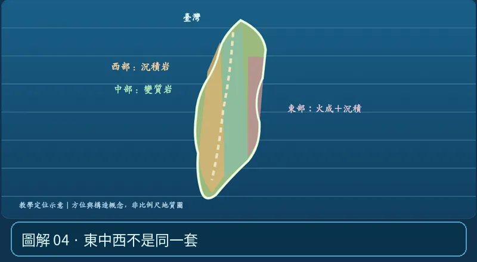

第 06 單元｜圖解 4/6｜課本 p.89–92（總測 p.93–99）
東中西不是同一套
中央山脈廣泛出露板岩、片岩等變質岩；西部麓山帶以沉積岩為主；海岸山脈包含安山岩、火山碎屑岩與沉積岩；大屯、龜山島與澎湖也有火成岩。
① 看一眼② 操作圖③ 自己推理④ 揭開解答
🔬 這張圖，請自己動手試
操作圖上方的頁籤、滑桿或按鈕；圖片也能左右滑動放大觀看。
互動圖解 · 東中西不是同一套

原創 SVG 地科教學模型，方便理解，非真實比例、非即時地震資料；互動無法載入時仍有靜態圖。
STEP 01 · 先觀察
👀 眼睛先找線索
切換到「岩石區」看看西部、中部與東部的分布，分別聯想沉積、變質與火山岩的形成。
💡 為什麼是這樣？
中央山脈常見變質岩，西部麓山帶與平原沉積岩重要，海岸山脈火山岩及沉積岩常見；這是教學簡化，區域有例外。
🎯 換個問法想一題
臺灣全島的岩石都屬於變質岩嗎？
我想好了，點開看答案 ↓
不是。西部有廣泛沉積岩，東部和北部也有火成岩。
⚡ 一句記住：臺灣岩石分布